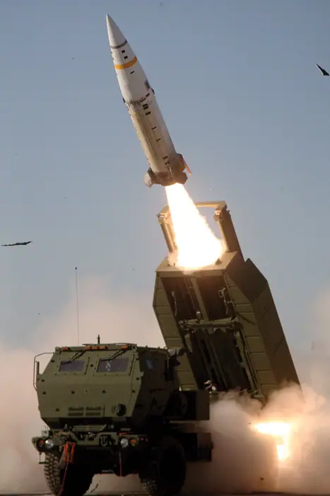

Ukraine deploys FP-7 tactical ballistic missile in combat for first time, Zelenskiy says

What happened
During a nightly briefing on 12 May, Zelenskiy reported that Ukrainian troops had successfully launched an FP‑7 missile from a mobile launcher in the eastern part of the country. He described the missile as a “new capability that gives us a chance to strike targets further away from the front lines” and praised the “dedication of our soldiers” in deploying the system. The president’s statement was accompanied by a brief video clip of a missile launch, though no post‑launch imagery or telemetry data was released. No third‑party verification or corroborating reports from independent observers have appeared, leaving the claim to rely on official Ukrainian testimony alone. [2]
The FP‑7, a French‑made tactical ballistic missile, is reported to have a range of roughly 120 km and carries a warhead weighing about one tonne. It is designed for rapid deployment from a mobile launcher, allowing Ukrainian forces to strike infrastructure and supply nodes behind Russian lines. [3]
Background and context
Ukraine’s acquisition of the FP‑7 fits into a broader pattern of Western support that has supplied the country with a range of short‑range ballistic systems. Earlier in the war, Ukraine employed systems such as the Russian‑origin Grad and the U.S.‑made M270 Multiple Launch Rocket System, which have proven effective against entrenched positions and supply depots. The FP‑7 represents a qualitative leap, offering a longer reach and a heavier payload than the systems previously fielded. [3]
The procurement of the FP‑7 appears to have come through a combination of French and U.S. assistance packages, reflecting the close cooperation between Ukraine and its Western allies. French officials confirmed that the missile was transferred as part of a broader security assistance program aimed at bolstering Ukraine’s deterrence posture. [2]
The announcement comes at a time when Ukraine has been intensifying its offensive operations in the Donbas region, seeking to disrupt Russian supply lines and regain control of key territories. The introduction of a new missile system could provide a strategic advantage by allowing Ukrainian forces to target infrastructure further from the front lines, potentially reducing the risk to ground troops. [2]
The bigger picture (diverse perspectives)
From the Ukrainian perspective, the deployment of the FP‑7 is portrayed as a testament to the country’s resilience and its ability to adapt to evolving battlefield requirements. Zelenskiy framed the launch as a “significant step” that would “demonstrate our capacity to defend our sovereignty” and “send a clear message to our adversaries.” [2]
Russia’s response has been cautious but pointed. Official statements have warned that the new capability could “complicate our defensive preparations” and that the Ukrainian forces are “increasing their strike envelope.” Russian military officials have called for a review of their air‑defence systems and have urged international partners to consider the implications of further missile deliveries to Ukraine. [3]
Western allies, particularly France, have reiterated their commitment to providing Ukraine with the tools necessary to defend itself. French officials emphasized that the FP‑7 is a “non‑strategic” weapon and that its deployment does not constitute a direct escalation. They also highlighted the importance of maintaining a balance of power that deters aggression without provoking a broader conflict. [2]
The announcement has sparked debate among arms‑proliferation experts, who warn that the spread of tactical ballistic missiles could lower the threshold for their use and potentially lead to a regional arms race. Some analysts argue that the FP‑7’s relatively short range and limited payload mitigate the risk of widespread destabilization, while others caution that the cumulative effect of multiple such systems could still alter the strategic calculus. [3]
What to watch (future implications)
The immediate question for observers is whether Ukraine will employ the FP‑7 in subsequent operations. While the missile’s range and payload are significant, the lack of independent verification means that its operational effectiveness remains untested in the field. Should Ukraine successfully use the system against a high‑value target, it could signal a shift in the tactical dynamics of the conflict. [3]
In the longer term, the deployment of the FP‑7 may prompt Russia to accelerate upgrades to its air‑defence networks, potentially involving the integration of newer radar and missile systems. Such upgrades could increase the cost and complexity of Ukrainian operations in contested areas. [3]
The FP‑7’s introduction also raises questions about the future trajectory of Western arms support to Ukraine. If the missile proves effective, it could encourage additional deliveries of similar systems, further expanding Ukraine’s strike envelope. Conversely, if the system proves unreliable or ineffective, it may prompt a reassessment of the types of weapons supplied. [2]
Finally, the broader strategic implications for NATO‑Russia relations remain uncertain. While the FP‑7 is a non‑strategic weapon, its deployment underscores the ongoing tension between Western support for Ukraine and Russia’s security concerns. The situation could influence diplomatic negotiations and the broader discourse on arms control in the region. [2]
In sum, Ukraine’s first operational use of the FP‑7 tactical ballistic missile marks a notable development in the conflict, but its full impact will depend on subsequent operational use, verification of effectiveness, and the responses of both Russia and Western partners. The coming weeks will likely reveal whether this symbolic step translates into a decisive tactical advantage or remains a high‑profile demonstration of Ukraine’s growing capabilities. [3]
Sources & further reading
- Unknown How scientists domesticated a killer bacterium
- Reuters Ukraine deploys FP-7 tactical ballistic missile in combat for first time, Zelenskiy says
- The New York Times Ukraine Reports First Combat Use of Its Own Ballistic Missile
- The Guardian Ukraine war briefing: Zelenskyy says new ballistic missile used in combat
- Defense News Ukraine deploys FP-7 tactical ballistic missile in combat for first time, Zelenskyy says
- The SOFX Report Ukraine Deploys Homemade FP-7 Ballistic Missile in First Combat Strike, Zelensky Says
- New York Post Ukraine debuts new self-made FP-7 ballistic missiles in strikes against Russia: Zelensky
- UkrMedia News Ukraine has used an FP-7 ballistic missile for the first time
- Kyiv Post Long-Range FP-9 Missile Ready This Fall, Zelensky Says
- Aerospace Global News Ukraine fires FP-7 ballistic missile in first combat deployment
- UNITED24 Media Ukraine Successfully Uses Domestic FP-7 Ballistic Missile for the First Time, Zelenskyy Says
- UA.NEWS Video: Ukraine Deploys the FP-7 Tactical Ballistic Missile for the First Time
- The Vibes Ukraine deploys new FP-7 tactical ballistic missile in combat for first time
- Ukrinform Ukraine’s first use of FP-7 ballistic missile successful, military expert says
- Janes Ukraine fires FP-7 tactical ballistic missile in first combat use
- The Kyiv Independent 'We're not telling' — Ukraine won't say what first FP-7 ballistic missile strike hit
- Unknown USDA scientists get reprieve from lab closures, but for how long?
- Unknown Bonanza of new dates rewrites the history of the Inca
- Unknown NSF backs choice of new Antarctic contractor despite concerns by government watchdog and researchers
- Unknown Coral can heal rapidly from bleaching—if it touches a clone
- Unknown Can predictive tools tell us who will really benefit from antidepressants?
- Unknown Mountaintop microwave observatory will peer into the infant universe
- Unknown This year’s ‘super’ El Niño could wreak ecological havoc worldwide
- Unknown AI edges closer to solving the Riemann hypothesis, one of math’s hardest problems
- Unknown OpenAI just changed math forever. Exactly how, no one yet knows